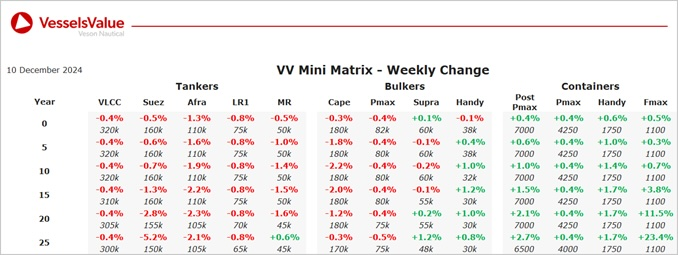

inWeekly Vessel Valuations Report11/12/2024

Bulkers: Bulker values remain stable this week, with a small decrease observed for mid age tonnage Capesizes
Capesize BC Blue Lhotse (180,100 DWT, Mar 2011, Daehan) sold to unknown South Korean buyers for USD 28.8 mil, VV Value USD 28.68 mil
Capesize BC K Victory (181,500 DWT, Jul 2012, Sasebo) sold to unknown Chinese buyers for USD 33.5 mil, VV Value USD 33.61 mil
Kamsarmax BC Hellenic C (81,800 DWT, Dep 2014, Jiangsu Eastern) sold to unknown European buyers for USD 20 mil, VV Value USD 18.05 mil
Supramax BC Lista (55,900 DWT, May 2011, IHI) sold to VOSCO for USD 16.8 mil, VV Value USD 18.17 mil
Handy BC Aegean Spire (33,400 DWT, Jun 2008, Shin Kochi) sold to undisclosed buyers for 11.8 mil, VV Value USD 11.23 mil
Tankers:Values for older tonnage softened again last week owing to some recent sales with younger and smaller tonnage remaining stable
No notable sales
Containers:Value increases in older tonnage this week, with rises for Feedermaxes, Post and Sub Panamax sizes
Sub Panamax Sparkle (2,553 TEU, Naikai, 2009) sold to Swiss buyers for USD 23 mil, VV Value USD 23.3 mil
Sub Panamax Pomerenia Sky (2,546 TEU, Jiangsu Yangzijiang, 2007) sold to Undisclosed for USD 22 mil, VV Value USD 22.1 mil
